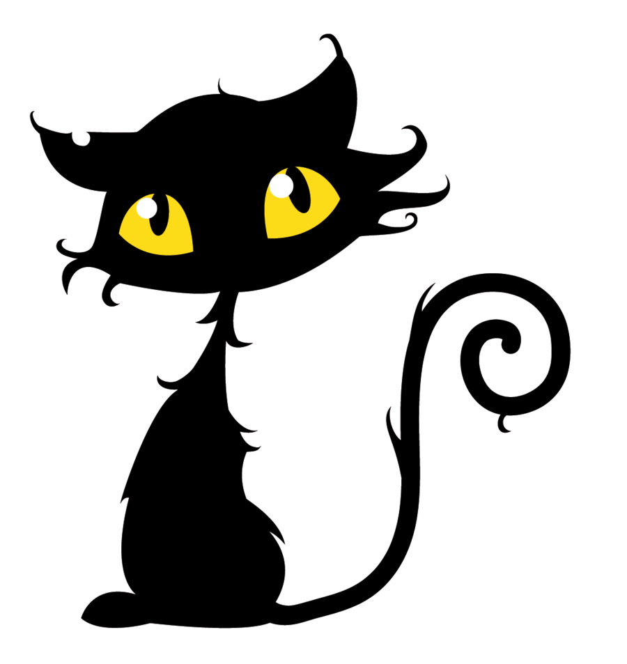
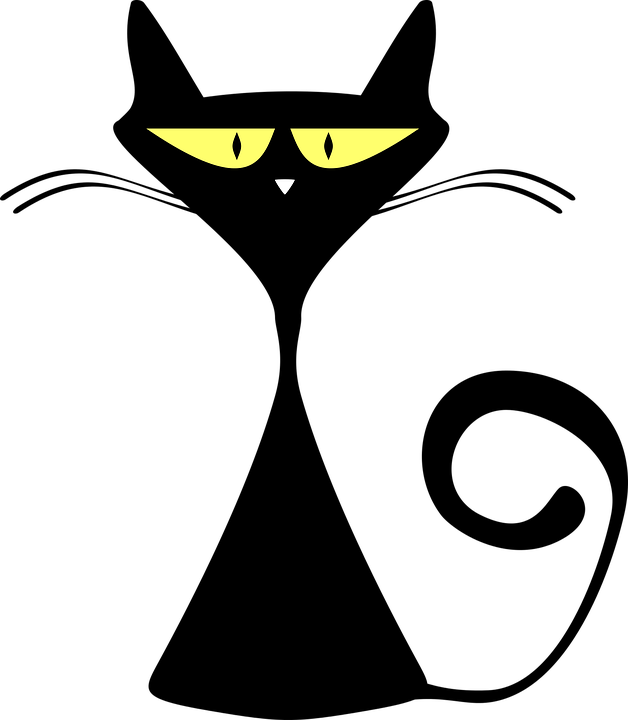
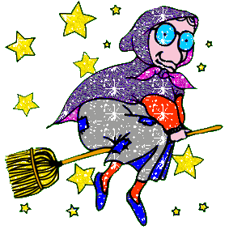
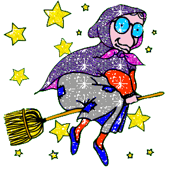

Halloween is an annual holiday, celebrated each year on October 31, that has roots in age-old European traditions. It originated with the ancient Celtic festival of Samhain, when people would light bonfires and wear costumes to ward off ghosts. In the eighth century, Pope Gregory III designated November 1 as a time to honor all saints; soon, All Saints Day incorporated some of the traditions of Samhain. The evening before was known as All Hallows Eve, and later Halloween. Over time, Halloween evolved into a day of activities like trick-or-treating and carving jack-o-lanterns. Around the world, as days grow shorter and nights get colder, people continue to usher in the season with gatherings, costumes and sweet treats.
 It's very spooky on Halloween night,
The ghosts and goblins will give you a fright.
Watch your back, do not be blind.
If you're not careful, who knows what you'll find?
You might see things like little black bats,
Or you might see things like scary black cats.
On every porch there's a pumpkin or two,
With their creepy grins smiling at you.
It's very spooky on Halloween night.
Resurce

 
